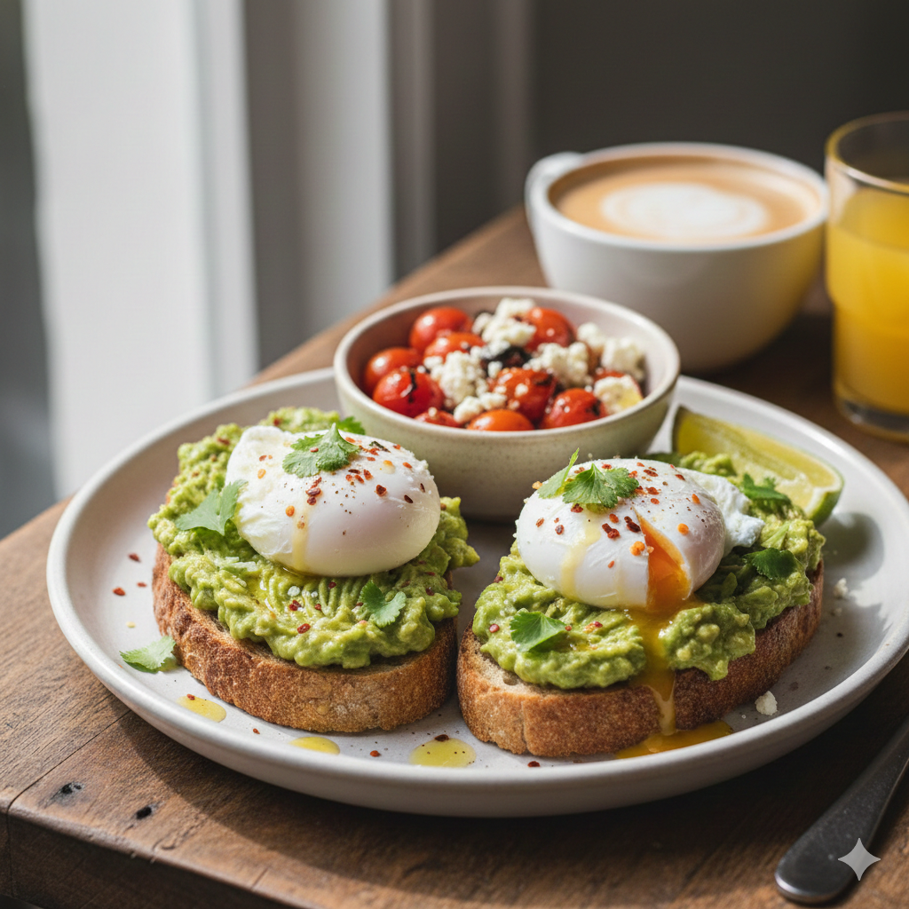

Home
Avocado Toast

Description
Avocado toast is the ultimate blank canvas. Whether you want a simple 5-minute breakfast or a gourmet brunch spread, the secret lies in two things: high-quality bread (like sourdough) and acid (lemon or lime) to brighten the fats.
Ingredients
- Bread
- Mashed avocado
- Eggs
- Garlic
- Seasonings
Steps
- The Bread: Use a thick-cut, crusty sourdough or multigrain. Toast it until it's sturdy enough to hold the weight.
- The Garlic Rub: For a pro touch, rub a peeled raw garlic clove over the warm, toasted bread before adding the avocado. It adds a subtle, fragrant heat.
- The Mash: Mash the avocado with a squeeze of lemon/lime, a pinch of salt, and red pepper flakes before putting it on the toast for even flavor.
Congrats! You have the easiest avocado toast recipe ever!